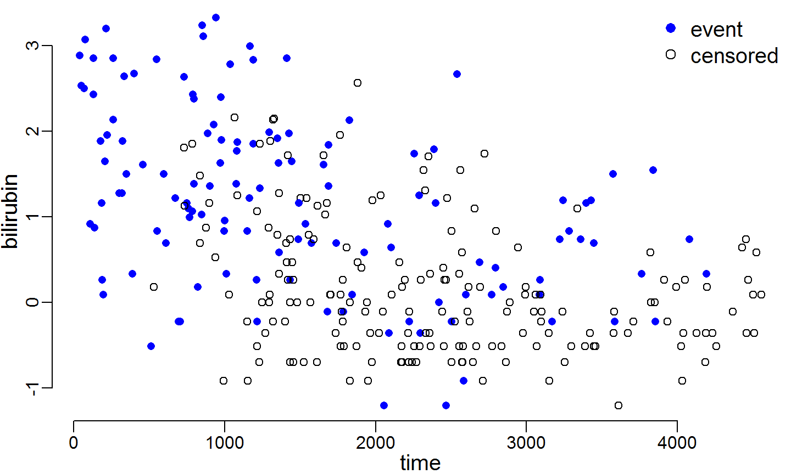

interactive hazard regression
Generate a D3 visualization using one line of R code thanks to htmlwidgets
August 12, 2015
interactive hazard regression
Generate a D3 visualization using one line of R code thanks to htmlwidgets

Example:
library(dplyr)
library(survival)
library(ihazr)
pbc5 <- pbc %>%
slice(1:312) %>%
select(time, status, age, edema, bili, albumin, protime) %>%
mutate(time = time/365, status = (status==2)*1,
bili = log(bili), protime = log(protime))
ihazr(time=pbc5[,1], status=pbc5[,2], marker=pbc5[,3:7])
http://github.com/liangcj/ihazr
Is this useful?
Is there already something out there that does this?
What's an intuitive way to dynamically adjust the time bandwidth?
Thoughts on interface?